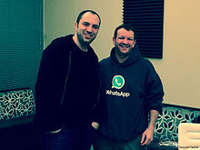

Brian Acton (born February 17,
1972) is an American computer programmer and Internet entrepreneur. He is the
co-founder (with Jan Koum) of WhatsApp, a mobile messaging application which was
acquired by Facebook Inc. in February 2014 for US$19 billion. He was formerly
employed at Yahoo Inc.
Acton, born in Michigan,
grew up in Central Florida, where he graduated from Lake Howell High School. He
later graduated from Stanford University in 1994 with a degree in computer
science. In 1992, he became a systems administrator for Rockwell International,
before becoming a product tester at Apple Inc. and Adobe Systems. In 1996, he
became the 44th employee hired by Yahoo Inc.
In 1998, Jan Koum was hired
by Yahoo as an infrastructure engineer. Shortly afterward he met Acton while
working at Ernst & Young as a security tester.Over the next nine years, they
worked at Yahoo. Acton invested in the dotcom boom and lost millions in the
dot-com bubble of 2000. In September 2007 Koum and Acton left Yahoo and took a
year off, traveling around South America and playing ultimate frisbee. Both
applied, and failed, to work at Facebook. In January 2009, Koum bought an iPhone
and realized that the then seven-month-old App Store was about to spawn a whole
new industry of apps. He visited his friend Alex Fishman and talked about
developing an app. Koum almost immediately chose the name WhatsApp because it
sounded like “what’s up,” and a week later on his birthday, Feb. 24, 2009, he
incorporated WhatsApp Inc. in California
In 2014, Koum and Acton agreed to sell WhatsApp to Facebook for approximately $19 billion USD in cash and stock. Forbes estimates that Acton held over 20% stake in the company, making his net worth around $3.8 billion. According to Acton's personal Twitter feed, he was turned down for employment by both Twitter and Facebook in 2009.